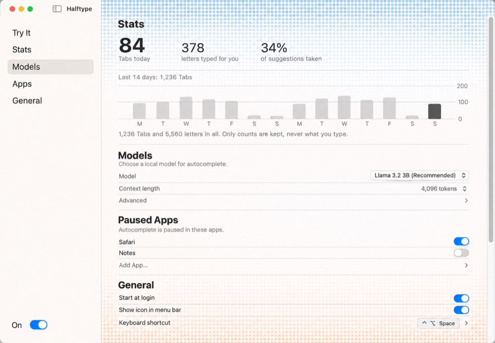
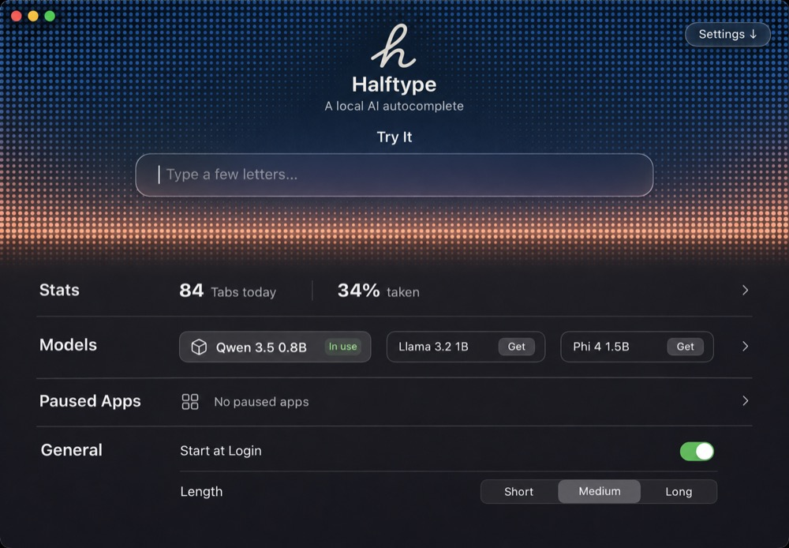
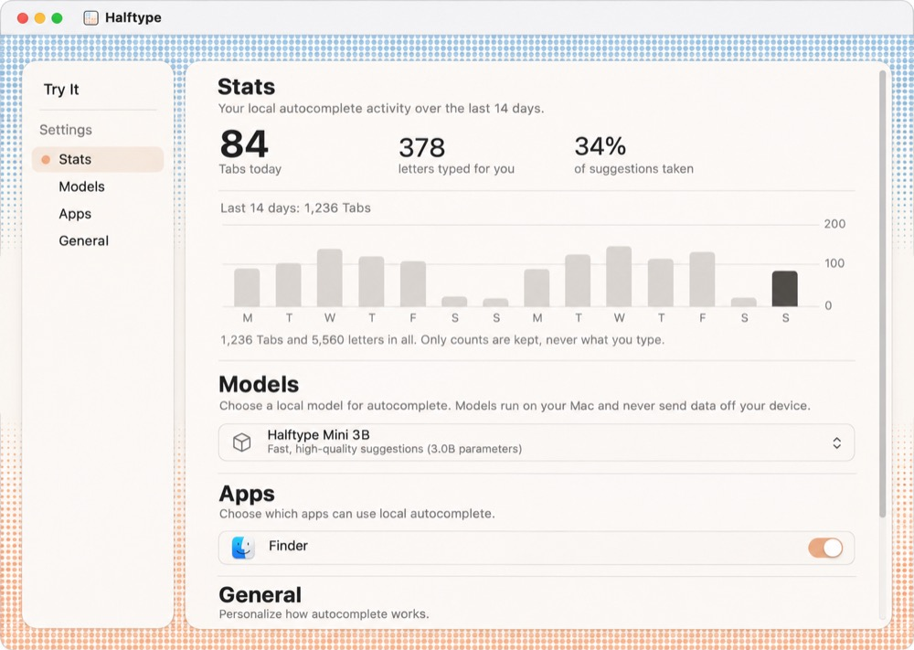

Image ideas (Codex image tool: ideas, not builds)
KOpaque sidebar, sky in the content · image

Codex’s take on B, light. Worth taking: section titles inside one long pane read fine without boxes; its rows are invented.
LShort sky header, settings as summary rows · image

Worth taking into E: the sky shrinks to a band around the field, and each section is one summary row (84 Tabs today, the models as chips) that expands, so the whole app fits one screen. Its model names are invented.
MFloating card, Settings sections nested · image

Worth taking into F: Try It, then a Settings heading with its sections indented and a peach dot on the current one.